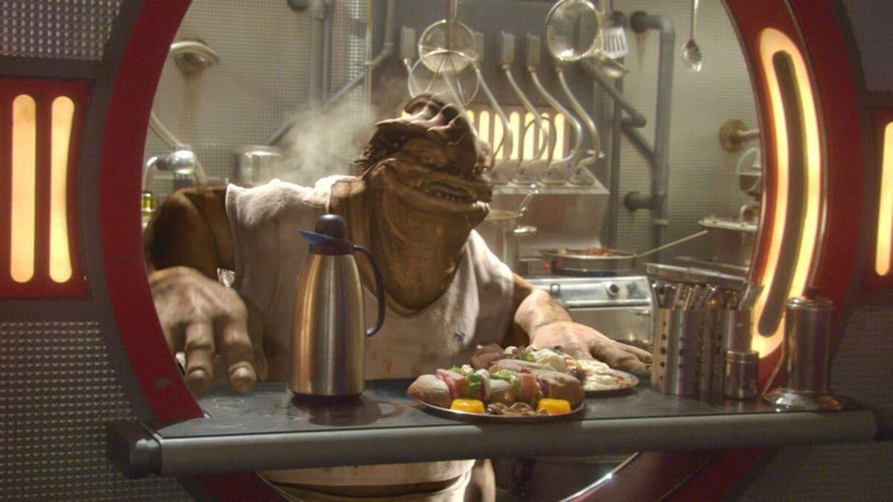

Welcome to Dex's Diner!
The best eats in the CoCo Town streets

Menu
Lunch and Dinner Specials
Primeday
- Nuna salad sandwich with cup of soup (6.1 credits).
- Kommerken flank steak and steamed ootoowergs (8.7 credits).
Centaxday
- Molecularly agitated cheese sandwich with cup of soup (5.5 credits).
- L'lahsh-marinated nutrient globules with mixed Alderaanian vegetables (8.5 credits).
Taungsday
- Togruta-style Shili cheese dog with cup of soup (5.5 credits).
- Braised bruallki brisket (8.7 credits).